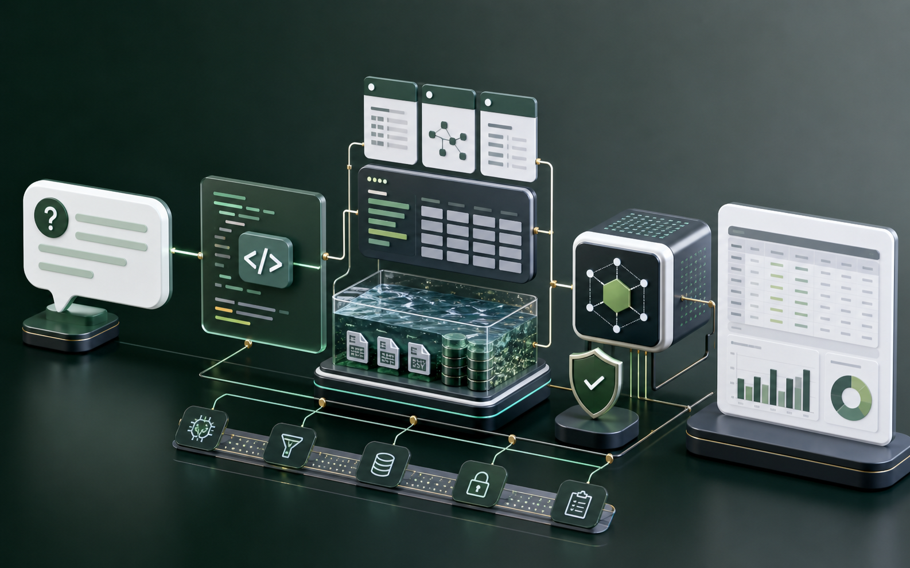

Grounded AI applications
RAG pipelines, citation checks, metadata filters, source review, and answer generation paths designed for enterprise data instead of generic chat demos.
Open to Applied AI / LLM Systems roles
Senior Software Engineer -> Applied AI Engineer
I combine 10+ years of backend, AWS, and data platform experience with RAG, agent workflows, evaluation, and observability to turn AI prototypes into validated, reviewable systems.
years in backend, cloud, and distributed systems
AI engineering projects with repos, docs, screenshots, and testable workflows
RAG, agents, evals, observability, data workflows, and cloud deployment
Engineering Focus
RAG pipelines, citation checks, metadata filters, source review, and answer generation paths designed for enterprise data instead of generic chat demos.
Golden datasets, regression scoring, prompt/version tracking, trace history, and release evidence that make AI behavior inspectable.
Agentic and scheduled workflows that create artifacts, preserve logs, expose approval states, and keep humans in the loop before production changes.
Target Roles
Senior Applied AI Engineer or LLM Systems Engineer roles focused on RAG, evals, observability, governed data access, and production AI infrastructure.
Pilot Offer
I am looking for 1-2 Java/Spring teams with reproducible Maven + JaCoCo projects. I will identify 1-3 low-coverage classes, use JTestGen to generate and repair test candidates, run Maven validation, and return a reviewable PR or patch with before/after coverage.
Portfolio
Each project is built to show production judgment: real workflows, clear constraints, testable behavior, evidence artifacts, and deployable infrastructure rather than a thin demo page.
Flagship Project
A citation-grounded mortgage research API with document ingestion, local RAG, optional OpenAI answer generation, run tracing, metadata filters, and tested FastAPI endpoints.
Reliability Layer
A regression framework for RAG and agent workflows with golden datasets, groundedness scoring, citation checks, provider adapters, SQLite run history, and CI-ready reports.

Content Operations
An open-source AI content operations platform that turns technical topics into reviewed, source-backed, publishable articles with quality checks, approval gates, publishing receipts, scheduled workers, and AWS-ready observability.

Data Agent
An enterprise analytics assistant that translates business questions into governed Athena SQL with schema retrieval, safety checks, local Athena mock execution, result explanation, and query run traces.

Developer Productivity
A coverage-guided AI system for generating Java unit tests with JaCoCo analysis, Maven execution, repair-loop prompting, prompt versioning, deterministic evals, and inspectable run artifacts.

Writing
June 8, 2026
Why this week's real signal was governance, context, state, and reliability around agents.
Career StrategyMay 26, 2026
A personal read on where my Java, AWS, and data-platform background can compound in the AI era.
Builder NotesMay 26, 2026
How I am reframing my engineering identity around validation loops, artifacts, and productized outcomes.
Product ThinkingMay 24, 2026
Why JTestGen is a better 90-day bet than a broad AI platform, and what a first paid audit could prove.
RAG EvaluationMay 23, 2026
Retrieval recall, groundedness, citation correctness, and regression datasets.
AgentsMay 23, 2026
Tool contracts, retries, state, guardrails, and human review points.
Data + AIMay 23, 2026
Schema retrieval, SQL validation, cost control, and result verification.
About
I am a senior software engineer with experience across financial services, telecom, retail, and cloud-native systems. My current focus is applied AI: building LLM applications that connect models to real data, workflow engines, quality evaluation, and production infrastructure.
Contact